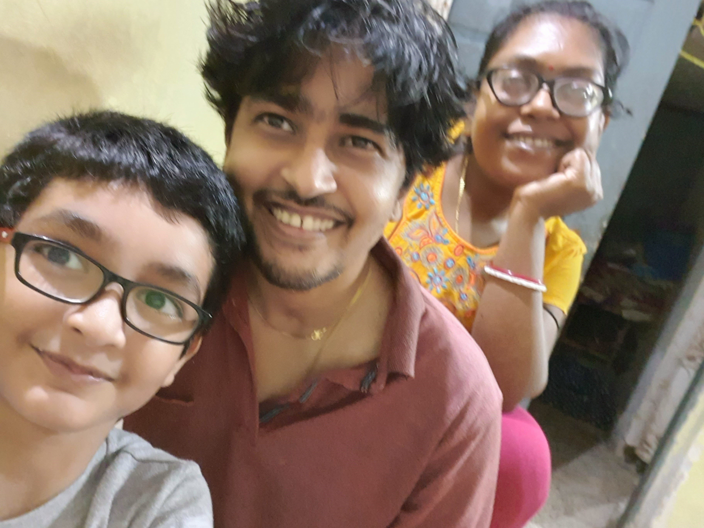

Diwali Special

Diwali is a festival of lights. it brings joy and cheerfulness in us and our loved ones. its fun to celebrate diwali with our friends and relatives. we wear new clothes, do puja, light our houses with diyas, lamps, lanterns. we give gifts and sweets. we hang torans on our doors. diwali symbolizes victory of good over evil. i had a lot of fun with my relatives doing all the special diwali activities.
Rangoli
during diwali, we decorate our houses with beautiful rangolis. it is always fun to make a rangoli. it increases our bond between our friends and families when we do it together. during night, we use decorated diyas to light our rangolis. i made a beautiful rangoli with my family and my uncle and aunt. my aunt taught me so many rangoli tips. it was indeed so much fun.
Food
diwali is all about delicious food. before diwali we prepared some diwali snacks like chakli, basan laddoos, namkeen, etc. during diwali, we made delicious gulab jamuns and kheer. my grandmother also made my favourite chicken biryani and egg cutlet. my aunt made delectable and spicy lasagne and pasta. it was so yummy.
during diwali, we should eat all the delicious food moderately. eating too much sweets can damage our teeth. excessive eating can also lead to stomach disorders and obesity. so eat wisely, during diwali.
Fire Crackers
during diwali, many people burst fire crackers to have fun, but it is very dangerous for our environment. it leads to air and noise pollution. the animals-birds also get affected. i personally do not burst fire crackers and do my bit to save my environment.